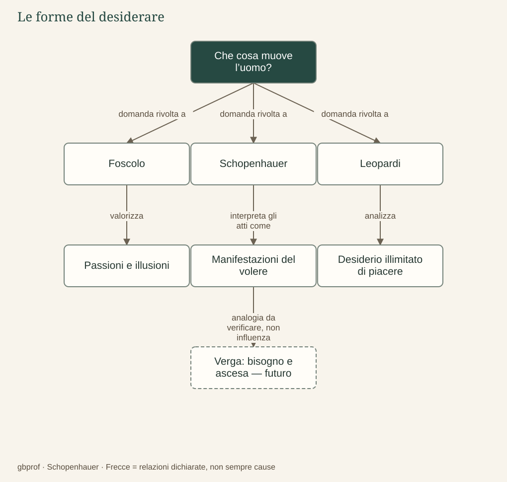

B · Schopenhauer e la letteratura · 02
Che cosa muove l’uomo?
Le nostre ragioni governano davvero ciò che desideriamo?
Nella vita ordinaria tendiamo a raccontare le nostre azioni attraverso ragioni: studio per imparare, lavoro per essere indipendente, cerco una persona perché la amo. Queste spiegazioni non sono necessariamente false, ma la filosofia e la letteratura possono domandare se esauriscano ciò che ci muove. Il confronto diventa utile quando distinguiamo la ragione consapevole, l’esperienza del desiderio e l’interpretazione più generale che ciascun autore propone.
Il volere e i motivi in Schopenhauer
Per Schopenhauer l’intelletto illumina possibilità e mezzi, ma non crea dal nulla l’impulso fondamentale a vivere e a volere. Un motivo rende intelligibile un’azione individuale in rapporto a un carattere; la Volontà non è invece un motivo universale nascosto, come se tutti perseguissero inconsapevolmente il medesimo progetto. È ciò di cui i singoli atti sono manifestazioni, prima della loro organizzazione in un racconto razionale.
Questa distinzione impedisce di tradurre la sua tesi nella formula «siamo tutti egoisti e basta». Il sistema comprende la compassione e la possibilità di sottrarsi al servizio del volere. Il problema è piuttosto che conoscere un desiderio non equivale a dominarlo: posso descrivere perfettamente la mia ambizione e continuare a esserne guidato. La coscienza non coincide automaticamente con l’autonomia.
La teoria del piacere in Leopardi
Nelle riflessioni dello Zibaldone del luglio 1820, Leopardi interpreta il desiderio del piacere come una tendenza senza limite determinato di durata e di estensione. Non desideriamo soltanto questo piacere circoscritto, ma una soddisfazione che vorremmo piena e durevole; gli oggetti disponibili, invece, sono sempre finiti. La sproporzione non richiede un’anima metafisicamente infinita: si può pensare dentro una concezione materiale del vivente.
L’immaginazione risponde a questa apertura oltre il limite: quando un ostacolo impedisce di vedere tutto, può dare luogo a spazi e possibilità che la percezione non offre. Nell’Infinito la siepe non è quindi soltanto una privazione, perché mette in moto il pensiero oltre ciò che l’occhio raggiunge. Questa esperienza non equivale alla contemplazione schopenhaueriana delle Idee: il confronto coglie una trasformazione dell’esperienza, ma deve conservare la differenza dei suoi fondamenti.
Foscolo: passioni che diventano valori
Nell’Ortis amore e patria non sono semplici ornamenti di una vita già garantita: sostengono il modo nel quale Jacopo immagina se stesso e il proprio futuro. La loro crisi mostra quanto l’individuo dipenda da legami e aspettative che non controlla. Il linguaggio della passione, tuttavia, non si riduce a una diagnosi universale secondo la quale ogni desiderio andrebbe negato. La stessa energia può alimentare memoria, poesia e azione civile.
Le illusioni foscoliane non vanno intese come un programma freddamente calcolato con cui un individuo si racconta menzogne utili. Sono forze affettive e simboliche attraverso le quali i valori diventano vissuti: la ragione non garantisce un’immortalità personale, ma l’amore e la memoria possono continuare a orientare i vivi. La tensione fra conoscenza del limite e bisogno di significato rimane aperta, senza trasformarsi in una tranquilla soluzione teorica.
Un caso, tre domande
Immaginiamo una persona che cerca il riconoscimento attraverso un’opera artistica. Con Schopenhauer possiamo chiederci quanto l’ambizione serva il volere e se sia possibile contemplare senza cercare prestigio. Con Leopardi possiamo osservare la distanza tra la felicità immaginata e il risultato concreto. Con Foscolo possiamo domandare se quell’opera costruisca una memoria e un legame capaci di oltrepassare l’esperienza immediata dell’autore. Le letture si illuminano reciprocamente proprio perché non dicono la stessa cosa.
Nel futuro nodo su Verga, bisogno, interesse economico, ambizione e «roba» permetteranno di esaminare le forme sociali del desiderio. Sarà necessario distinguere il bisogno di sopravvivere dalla ricerca di ascesa e dall’accumulazione: trattarli come sinonimi cancellerebbe la concretezza dei personaggi e delle loro condizioni. Per ora questa è una domanda di ricerca predisposta, non un capitolo d’autore già realizzato.
Il problema in un’immagine
Dopo la lettura
Mappa di sintesi


Leggi la mappa in forma testuale
- Che cosa muove l’uomo? domanda rivolta a Foscolo.
- Che cosa muove l’uomo? domanda rivolta a Schopenhauer.
- Che cosa muove l’uomo? domanda rivolta a Leopardi.
- Foscolo valorizza Passioni e illusioni.
- Schopenhauer interpreta gli atti come Manifestazioni del volere.
- Leopardi analizza Desiderio illimitato di piacere.
- Manifestazioni del volere analogia da verificare, non influenza Verga: bisogno e ascesa — futuro.
Fermati sul problema
Il desiderio illimitato di piacere in Leopardi comporta necessariamente un’anima infinita?
Confronta il tuo ragionamento
No: l’illimitatezza del desiderio può essere pensata in una concezione materiale del vivente. Non bisogna trasferire una struttura dell’esperienza in un’affermazione metafisica che il testo non richiede.